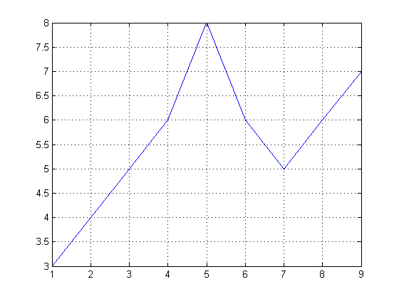
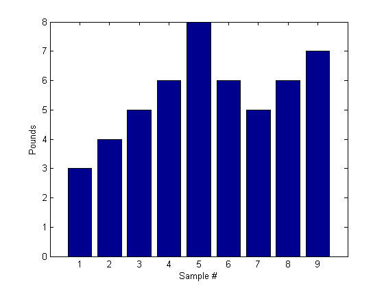
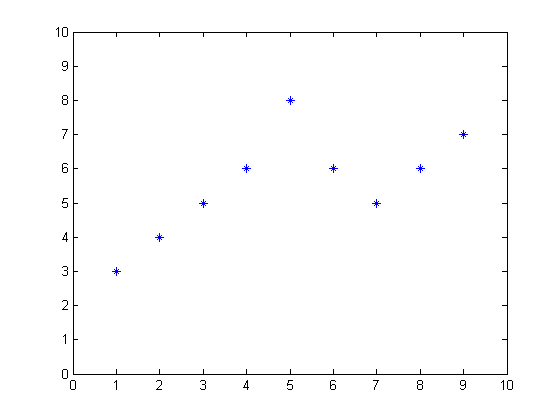
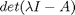
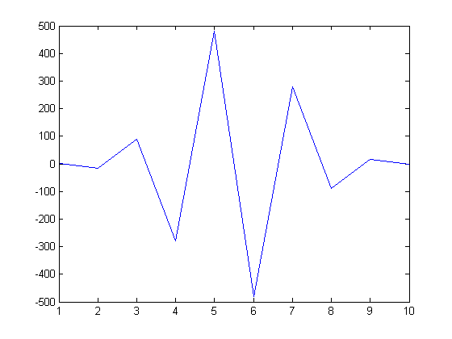

This is a demonstration of some aspects of the MATLAB language.
First, let's create a simple vector with 9 elements called a.
a = [1 2 3 4 6 4 3 4 5]
a =
1 2 3 4 6 4 3 4 5
Now let's add 2 to each element of our vector, a, and store the result in a new vector.
Notice how MATLAB requires no special handling of vector or matrix math.
b = a + 2
b =
3 4 5 6 8 6 5 6 7
Creating graphs in MATLAB is as easy as one command. Let's plot the result of our vector addition with grid lines.
plot(b)
grid on
 MATLAB can make other graph types as well, with axis labels.
bar(b) xlabel('Sample #') ylabel('Pounds')
MATLAB can use symbols in plots as well. Here is an example using stars to mark the points. MATLAB offers a variety of other symbols and line types.
plot(b,'*')
axis([0 10 0 10])
 One area in which MATLAB excels is matrix computation.
Creating a matrix is as easy as making a vector, using semicolons (;) to separate the rows of a matrix.
A = [1 2 0; 2 5 -1; 4 10 -1]
A =
1 2 0
2 5 -1
4 10 -1
We can easily find the transpose of the matrix A.
B = A'
B =
1 2 4
2 5 10
0 -1 -1
Now let's multiply these two matrices together.
Note again that MATLAB doesn't require you to deal with matrices as a collection of numbers. MATLAB knows when you are dealing with matrices and adjusts your calculations accordingly.
C = A * B
C =
5 12 24
12 30 59
24 59 117
Instead of doing a matrix multiply, we can multiply the corresponding elements of two matrices or vectors using the .* operator.
C = A .* B
C =
1 4 0
4 25 -10
0 -10 1
Let's find the inverse of a matrix ...
X = inv(A)
X =
5 2 -2
-2 -1 1
0 -2 1
... and then illustrate the fact that a matrix times its inverse is the identity matrix.
I = inv(A) * A
I =
1 0 0
0 1 0
0 0 1
MATLAB has functions for nearly every type of common matrix calculation.
There are functions to obtain eigenvalues ...
eig(A)
ans =
3.7321
0.2679
1.0000
... as well as the singular value decomposition.
svd(A)
ans =
12.3171
0.5149
0.1577
The "poly" function generates a vector containing the coefficients of the characteristic polynomial.
The characteristic polynomial of a matrix A is

p = round(poly(A))
p =
1 -5 5 -1
We can easily find the roots of a polynomial using the roots function.
These are actually the eigenvalues of the original matrix.
roots(p)
ans =
3.7321
1.0000
0.2679
MATLAB has many applications beyond just matrix computation.
To convolve two vectors ...
q = conv(p,p)
q =
1 -10 35 -52 35 -10 1
... or convolve again and plot the result.
r = conv(p,q) plot(r);
r =
1 -15 90 -278 480 -480 278 -90 15 -1
 At any time, we can get a listing of the variables we have stored in memory using the who or whos command.
whos
Name Size Bytes Class A 3x3 72 double array B 3x3 72 double array C 3x3 72 double array I 3x3 72 double array PUBLISHING_DEBUGGING_FLAG 1x1 1 logical array (global) X 3x3 72 double array a 1x9 72 double array ans 3x1 24 double array b 1x9 72 double array p 1x4 32 double array q 1x7 56 double array r 1x10 80 double array Grand total is 88 elements using 697 bytes
You can get the value of a particular variable by typing its name.
A
A =
1 2 0
2 5 -1
4 10 -1
You can have more than one statement on a single line by separating each statement with commas or semicolons.
If you don't assign a variable to store the result of an operation, the result is stored in a temporary variable called ans.
sqrt(-1)
ans =
0 + 1.0000i
As you can see, MATLAB easily deals with complex numbers in its calculations.